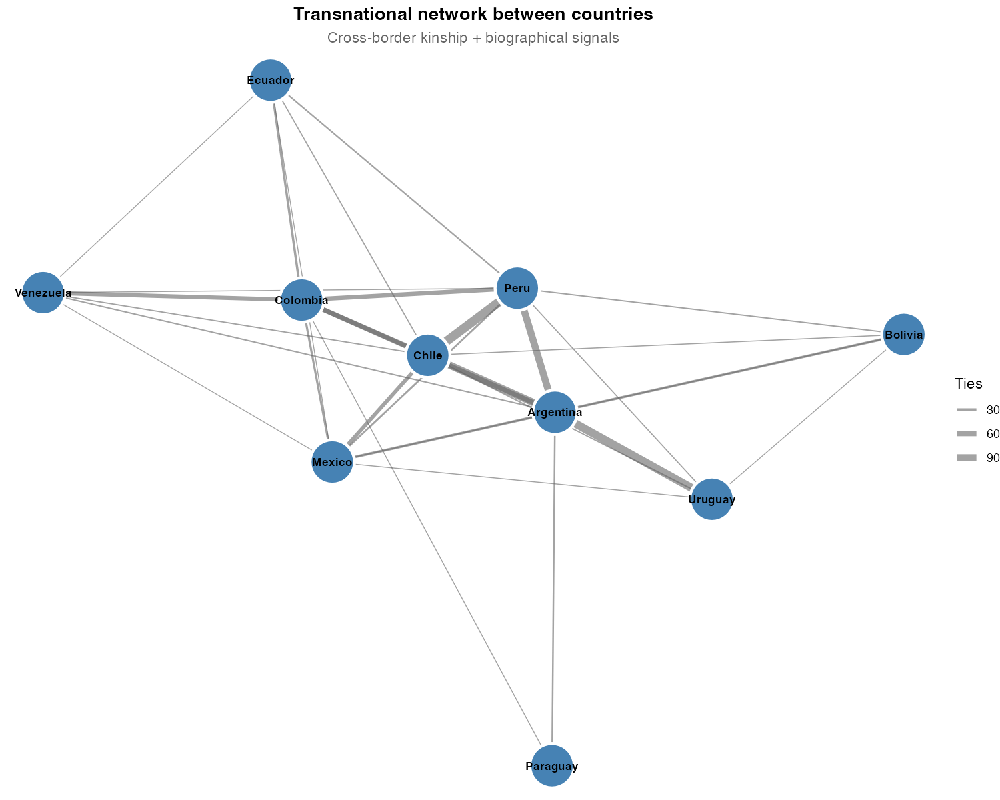

| Country | Individuals |
|---|---|
| chile | 1371 |
| colombia | 1333 |
| peru | 1296 |
| argentina | 1147 |
| mexico | 661 |
| venezuela | 170 |
| uruguay | 84 |
| ecuador | 56 |
| bolivia | 30 |
| paraguay | 21 |
Elite Family Networks and the Reproduction of Political Power in Latin America
Evidence from Wikipedia Genealogical Data, Nineteenth to Twenty-First Centuries
Keywords
elite networks, Latin America, family, political sociology, Wikipedia, social network analysis
Abstract
How do elite family networks structure the reproduction of political power in Latin America across the long nineteenth to twenty-first centuries? Using genealogical data scraped from Spanish-language Wikipedia for 6,169 notable individuals across ten countries, we construct kinship networks based on spouse, parent–child, and partner ties (8,201 matched edges between identified individuals). We combine network topology measures—degree, betweenness, PageRank, and Louvain community detection—with country-level aggregates of endogamy, transnational reach, and dynasty persistence. Descriptive and correlational analyses speak to four hypotheses: (H1) family closure covaries with political concentration; (H2) macro-scale network topology (chain, star, web, fragment) aligns with stylized regime types; (H3) transnational family ties follow Pacific–Andean rather than Atlantic corridors in the aggregate; (H4) betweenness centrality identifies individuals in structural brokerage positions potentially relevant to cross-national influence. We find substantial heterogeneity across republics. The strongest cross-national weights in the documented graph link Chile–Peru and Argentina–Uruguay. We emphasize that Wikipedia encodes a documentary elite biased toward literate, nationally visible strata. Causal claims are hedged throughout; findings are best interpreted as structured description of a collective digital archive rather than as an exhaustive map of Latin American elites.
Keywords: elite networks; Latin America; family; political reproduction; Wikipedia; social network analysis
1 Introduction
Latin American political history has long been interpreted through the lens of oligarchy, caudillismo, and the intergenerational transmission of status (Mahoney, 2010; Centeno, 2002). Classical elite theory—from Pareto and Mosca through mid-twentieth-century political sociology—stressed circulation versus closure: whether ruling strata renew themselves through co-optation and alliance or seal themselves behind kinship and class barriers. Empirical adjudication at scale, however, has remained difficult. Systematic, comparable evidence on how elite families connect across countries and centuries is scarce because prosopographical reconstruction is labor-intensive and rarely harmonized across national archives.
Historical sociology and political sociology nevertheless offer rich idiographic traditions. Padgett and Ansell’s (1993) analysis of Florentine marriage and banking ties showed how multiplex network structure could sustain “robust action” under factional rivalry. Regional studies of Latin American familias notables documented marriage strategies linking land, office, and credit (Balmori, Voss, & Wortman, 1984). Scaling such insights to multiple republics typically required either heroic archival work or illustrative genealogies whose representativeness is uncertain.
Digital traces offer a complementary path. Spanish-language Wikipedia aggregates biographical entries produced by dispersed editors; kinship statements—spouses, parents, children, partners—are often included in infoboxes or narrative leads. These data are neither representative of whole populations nor free of bias: they disproportionately document literate, urban, politically and culturally visible individuals. Yet precisely that bias may approximate what successive generations of national publics chose to record about “notable” families—a documentary elite whose network properties are sociologically interesting in their own right (Lazer et al., 2014). The task is not to confuse Wikipedia with society, but to analyze the structure of a large, public, repeatedly edited genealogical corpus.
This paper asks: How have elite family networks structured the reproduction of political power in Latin America from roughly the nineteenth through the twenty-first centuries? We articulate four hypotheses (H1–H4) linking (i) marriage closure to political concentration, (ii) macro-scale graph topology to stylized regime types, (iii) transnational kinship geography to colonial-era corridors, and (iv) betweenness centrality to brokerage positions potentially associated with cross-national salience.
Our contribution is threefold, but rests on a single organizing claim: family network structure is not a byproduct of political order in Latin America—it is a constitutive infrastructure of it. Where elites built durable states, they did so by layering kinship closure onto institutional access; where states remained fragile or personalist, the kinship graph itself encodes why. This claim does not require causal identification to be useful: demonstrating that network topology covaries systematically with regime type across ten republics, using a common corpus and comparable metrics, is itself a contribution that archival prosopography has rarely achieved at this scale.
We introduce two conceptual distinctions that organize the analysis. First, we distinguish closure from reach as alternative elite network strategies: families that maximize endogamy (closure) sacrifice the bridging ties needed for transnational coordination, while families that maximize cross-border reach typically exhibit lower endogamy rates. This closure–reach trade-off is observable in degree–endogamy correlations and is theoretically grounded in the tension between Bourdieu’s (1996) reproductive closure and Granovetter’s (1973) structural holes. Second, we distinguish the documentary elite field—the stratum of families that have successfully inscribed themselves in public digital archives—from the broader social elite. The documentary elite field is the object we analyze; its boundaries are themselves a sociological datum, not merely a sampling limitation.
The remainder proceeds as follows. Section 2 reviews relevant literature. Section 3 describes data construction, variables, and limitations—with summary statistics in Table 1 and related tables. Section 4 presents results by hypothesis, embedding the main empirical tables and figures in the narrative. Section 5 discusses interpretation and scope conditions, then concludes.
2 Literature and theoretical background
2.1 Notable families, oligarchy, and the state
Classic scholarship on Latin America emphasized the familia notable as a unit linking land, urban property, marriage, and access to state office (Balmori et al., 1984). Centeno (2002) connected elite networks to war-making and the fiscal–military organization of republics; Mahoney (2010) emphasized path dependence in colonial and postcolonial institutions. These works imply testable expectations at the network level: family strategies—endogamy, strategic exogamy, and placement of kin in parties and ministries—should covary with how concentrated political access is and how durable elite coalitions prove over time.
Bourdieu’s (1996) analysis of the French state nobility supplies a vocabulary for social reproduction: elites convert economic resources into social ties and cultural credentials, then monopolize institutional positions across generations. Latin American contexts differ—Catholic Church, army, export agriculture, mining enclaves—but the problem of stabilizing advantage through kinship remains analogous. Where elites successfully restrict marriage markets, one expects measurable closure at the level of surname clusters (H1). Where party systems fragment elite access, closure may remain moderate even as network density rises.
2.2 Network topology and political orders
Historical network analysis demonstrates that macro-structure—chains, stars, dense cores, or disconnected fragments—can correspond to distinct modes of coordination and conflict (Padgett & Ansell, 1993). Granovetter (1973) motivated attention to weak ties and brokers bridging clusters. Translating these ideas to Latin America requires caution: one may loosely associate linear dynastic chains with personalist or patrimonial consolidation (Weber’s patrimonialism as ideal type), star-like graphs with a legitimating “founding” lineage, dense webs with competitive oligarchy and multiple channels of access, and fragmented graphs with regionalized or weakly integrated national elites. Such mappings are stylized ideal-types for interpretation, not operational codes inferred mechanically from graph metrics (H2).
2.3 Empire, corridor, and transnational elites
Colonial geography—mining belts, highland–coastal links, viceregal capitals—may channel later elite mobility and marriage. Pacific Andean spaces and Chilean–Peruvian histories of war and diplomacy plausibly leave residual structure in cross-border kinship long after independence. If transnational kinship edges in a Wikipedia-derived graph concentrate along a Pacific–Andean corridor rather than dispersing uniformly, that pattern offers descriptive support for path-dependent geography (H3)—not proof of a colonial causal mechanism, but consistency with historically informed priors.
2.4 Gender, marriage, and visibility
Colonial and republican marriage regimes structured women’s positions as alliance partners and transmitters of property and status (Lavrin, 1990). If encyclopedic records disproportionately document women through ties to notable husbands and sons, degree in a kin-only graph may overstate public-political centrality while betweenness on office-weighted projections remains low. We treat gendered splits between degree and betweenness as hypothesis-generating evidence about brokerage and exclusion, not as definitive proof of mechanisms.
3 Data and methods
3.1 Source and population
We scraped Spanish-language Wikipedia biographical pages for ten Latin American countries (Argentina, Bolivia, Chile, Colombia, Ecuador, Mexico, Paraguay, Peru, Uruguay, and Venezuela), following the project pipeline described in the replication repository. Raw extracts were consolidated and normalized into relational tables (personas, relaciones, partidos, educacion, sucesiones). Table 1 summarizes the distribution of retained individuals by pais_base after deduplication. The working person table contains 6,169 rows; 8,201 kinship relation rows link two identified individuals (persona_relacionada_id non-missing) out of 14,190 extracted rows, so 57.8% of raw kinship statements resolve to another scraped biography. 92.9% of persons have a parsed birth year (anio_nacimiento), which anchors descriptive temporal plots.
Family is operationalized via familia_norm, a normalized surname cluster produced by the processing pipeline (orthographic merging). This is a Wikipedia-assigned label, not a validated genealogical house. Country attaches to individuals using nationality fields, infobox cues, text-based detection, and manual overrides (url_pais_extra.csv). A kinship edge is treated as transnational in aggregations when endpoint countries differ under these assignments.
3.2 Network construction and metrics
We construct an undirected graph on matched kinship edges and—following 03_grafo_parentesco.R—augment it with within-family ties for small lineages, predecessor–successor links, and bipartite projections from shared party and university membership for global centrality and community detection. Thus, degree and betweenness reported in metricas_centralidad.csv refer to this multiplex graph, whereas marriage-based endogamy rates use kin-type edges only (see below).
3.2.1 Why betweenness is computed on the multiplex graph
Betweenness centrality in a kinship-only graph would identify individuals who structurally mediate genealogical chains—an analytically narrow concept tied to documented parent–child and spousal links alone. The multiplex graph used here layers party co-membership, shared educational institutions, and political predecessor–successor ties onto kinship edges, so that shortest paths can pass through institutional as well as familial channels. That specification better approximates the multi-dimensional social infrastructure through which elite coordination is plausibly sustained in historical and republican settings (office holding, party politics, and university training alongside marriage). Endogamy rates, by contrast, are computed on spouse and partner edges only, preserving a strictly matrimonial definition of family closure. Metrics were computed in R with igraph; edges were constructed and merged as documented in the replication scripts.
Metrics computed with igraph include degree, betweenness centrality, PageRank, local clustering, and Louvain communities (resolution 1.0). Endogamy: on spouse/partner edges with matched partners, a tie is endogamous if both endpoints share familia_norm. Country-level marriage counts and rates are reported in Table 2. Transnational structure: country-pair aggregates combine kinship and biographical “mention” signals (transnacional_red_paises.csv). Dynasty persistence is summarized in dinastias_persistencia.csv. Hypothesis-oriented country summaries are pre-computed in paper/tables/T02_h1_h4_resumen_pais.csv and reproduced as Table 3.
3.3 Analytical stance and temporal scope
All main analyses are observational. Network metrics describe co-occurrence in a digital corpus conditioned on notability and editorial practice. Language in Section 4 follows a hedging norm (“associated with,” “consistent with,” “suggestive”). Biographical dates span roughly 1800–2000 with colonial antecedents for some lineages; long-run graphs conflate periods unless cohorts are split explicitly.
3.4 Limitations (explicit)
- Selection bias: Wikipedia encodes literate, visible, often male elites; indigenous, Afro-descendant, and subnational elites are systematically underrepresented.
- Kinship incompleteness: editors omit relatives; women may appear chiefly as spouses or mothers.
- Label noise:
familia_normmay merge or split lineages incorrectly, especially across countries. - Temporal conflation: graphs pool republican and colonial-era ties unless disaggregated.
- Edge incompleteness: 42.2% of kinship rows lack a matched endpoint; covert patronage or business ties are invisible.
- Single-country assignment forces multinational biographies into one country, partially mitigated by manual overrides and biographical mention layers.
- No causal identification: betweenness or endogamy cannot be interpreted as manipulable treatments without additional design.
These limitations frame the contribution as a mapped documentary elite—not an exhaustive social register—and motivate the interpretive discipline maintained in Section 4 and Section 5.
4 Results
We organize results by hypothesis. Summary statistics for marriage closure and institutional concentration by country appear in Table 2 and Table 3. Cross-border structure is documented in Table 4 and Table 5. Figure 1 situates the temporal distribution of births used throughout. National network layouts and transnational aggregates are shown in Figure 2 through Figure 5.

4.1 H1: Family closure and political concentration
| Country | Marriages | Endogamous | Endogamy rate | Transnational marriages | Transnational rate |
|---|---|---|---|---|---|
| Paraguay | 4 | 4 | 1.000 | 0 | 0.000 |
| Ecuador | 10 | 9 | 0.900 | 2 | 0.200 |
| Mexico | 108 | 94 | 0.870 | 15 | 0.139 |
| Argentina | 177 | 153 | 0.864 | 36 | 0.203 |
| Venezuela | 25 | 21 | 0.840 | 5 | 0.200 |
| Chile | 251 | 210 | 0.837 | 23 | 0.092 |
| Colombia | 151 | 120 | 0.795 | 13 | 0.086 |
| Uruguay | 18 | 14 | 0.778 | 7 | 0.389 |
| Peru | 104 | 80 | 0.769 | 12 | 0.115 |
| Bolivia | 3 | 2 | 0.667 | 2 | 0.667 |
| Country | Families (n) | Median party conc. | Median office conc. | Corr(degree, closure) | Corr(betweenness, closure) |
|---|---|---|---|---|---|
| Argentina | 165 | 0.500 | 0.500 | -0.738 | -0.236 |
| Bolivia | 4 | 0.417 | 0.550 | — | — |
| Chile | 98 | 0.375 | 0.529 | -0.536 | -0.330 |
| Colombia | 147 | 0.667 | 0.556 | -0.478 | -0.073 |
| Ecuador | 6 | 0.700 | 0.472 | — | — |
| Mexico | 111 | 0.667 | 0.667 | -0.797 | -0.440 |
| Paraguay | 1 | — | 1.000 | — | — |
| Peru | 182 | 0.500 | 0.571 | -0.720 | -0.122 |
| Uruguay | 9 | 0.833 | 0.615 | — | — |
| Venezuela | 20 | 0.500 | 0.625 | -0.764 | -0.344 |
| Note. Correlations are not reported for countries with fewer than 10 families |
Endogamy rates vary markedly across countries (Table 2). Large republics cluster between roughly 0.77 and 0.87 on the kinship-based endogamy rate, with Paraguay at 1.00 on a very small marriage count (4). Bolivia shows the lowest endogamy rate in the table (0.67) alongside a high transnational marriage share (0.67), reflecting both small n and boundary effects in the corpus. Table 3 reports family counts per country (e.g., Argentina 165, Peru 182, Mexico 111, Chile 98) and country-level correlations between mean genealogical degree and family closure, and between mean betweenness and closure, within families. Cells marked “—” indicate correlations that were not estimated (see table note).
At the country level, Corr(degree, closure) is negative everywhere it is defined in Table 3, and substantively large for several major republics: Mexico −0.797, Venezuela −0.764, Argentina −0.738, Peru −0.720, Chile −0.536, Colombia −0.478. One observational reading—consistent with competitive-oligarchy narratives and with multiplex “robust action” (Padgett & Ansell, 1993)—is that large, highly connected families could not “afford” high endogamy if maintaining network reach required outward marriage and alliance; smaller or less central lineages, by contrast, could sustain higher closure without sacrificing documented connectivity. Interpreted through Bourdieu’s (1996) vocabulary of capital conversion, brokerage across families and institutions and closure within the surname cluster appear here as alternative strategies whose joint realization is constrained in the marriage market, not as mechanically complementary dimensions.
Corr(betweenness, closure) is more modest in magnitude than Corr(degree, closure) in every country where both are defined—for example Argentina −0.236, Mexico −0.440, Chile −0.330, Venezuela −0.344, Peru −0.122, Colombia −0.073 (Table 3)—suggesting that structural brokerage in the multiplex graph is less tightly organized around matrimonial closure than raw genealogical degree is. That pattern is consistent with institution-heavy shortest paths (party, university, succession) that need not align with endogamy rates computed on spouse/partner edges alone.
The negative degree–closure correlation admits a structural mechanism that goes beyond coincidence. In competitive oligarchic settings, access to state resources—contracts, appointments, fiscal transfers— required coalition partners drawn from outside one’s own surname cluster. Endogamy, in this context, is a luxury of the politically marginal: families secure enough in their economic base (hacienda, mining enclave, Church patronage) to forgo the brokerage rents available through exogamous alliance. Large, high-degree families in the Wikipedia corpus are disproportionately political families—presidents, ministers, generals—whose positions required permanent negotiation with rival lineages. This is consistent with Padgett and Ansell’s (1993) finding that Medici dominance depended precisely on not over-committing to any single faction: multiplex, outward-facing networks sustained “robust action” that dense in-group closure would have foreclosed. The pattern is descriptive, not causal; the mechanism proposed here is a hypothesis for future cohort-level testing.
The weaker betweenness–closure correlation has a different explanation. Betweenness in the multiplex graph reflects position on shortest paths that traverse parties, universities, and succession chains—not only kinship. An individual can be a structural broker across institutions regardless of whether their family is endogamous, because brokerage in the multiplex graph is determined by the institutional layer, not the matrimonial layer. This separation of genealogical closure from institutional brokerage is itself a substantive finding: it suggests that the two classic mechanisms of elite reproduction—marriage strategy and institutional placement—operated with considerable independence in Latin American republics, and should not be conflated analytically.
H1 receives partial descriptive support: closure and institutional concentration co-vary in informative ways in Table 3, but the degree–closure association is heterogeneous and not uniform across polities.
4.2 H2: Topology and stylized regime types

Exploratory visualization and community structure suggest ideal-typical alignments (interpretive, not algorithmically assigned). Paraguay shows a near-linear chain around the López dynasty, evocative of patrimonial consolidation. Chile and Peru display star-like patterns with prominent hubs in exploratory plots. Argentina, Colombia, and Mexico show dense webs with multiple high-degree nodes. Bolivia, Venezuela, and Ecuador appear more fragmented into smaller cohesive clusters. Figure 2 summarizes the country-faceted view used in the replication workflow. H2 is supported descriptively at the level of stylized analogy; we do not estimate predictive models from topology to regime type.
4.3 H3: Transnational corridors
| From → To | Kinship | Biographical | Total |
|---|---|---|---|
| chile → peru | 36 | 81 | 117 |
| argentina → uruguay | 46 | 59 | 105 |
| argentina → chile | 56 | 38 | 94 |
| argentina → peru | 31 | 59 | 90 |
| argentina → colombia | 30 | 27 | 57 |
| chile → colombia | 43 | 14 | 57 |
| colombia → peru | 23 | 28 | 51 |
| colombia → venezuela | 37 | 11 | 48 |
| chile → mexico | 17 | 27 | 44 |
| argentina → mexico | 19 | 7 | 26 |
| argentina → bolivia | 12 | 13 | 25 |
| colombia → ecuador | 13 | 9 | 22 |
| colombia → mexico | 12 | 7 | 19 |
| mexico → peru | 6 | 9 | 15 |
| argentina → paraguay | 7 | 5 | 12 |
| Family | Countries | Members | Country list |
|---|---|---|---|
| borrero | 4 | 39 | argentina, chile, colombia, ecuador |
| campero | 4 | 24 | argentina, bolivia, chile, peru |
| ponce de león | 4 | 12 | argentina, mexico, peru, uruguay |
| garcía de zúñiga | 4 | 11 | argentina, chile, colombia, uruguay |
| sucre | 4 | 11 | argentina, colombia, ecuador, venezuela |
| pinto chile | 3 | 50 | argentina, chile, uruguay |
| caicedo | 3 | 48 | chile, colombia, peru |
| velasco chile | 3 | 44 | argentina, chile, venezuela |
| diez canseco | 3 | 33 | chile, ecuador, peru |
| pizarro | 3 | 33 | chile, colombia, peru |
| miró quesada | 3 | 22 | mexico, peru, uruguay |
| o'donnell | 3 | 22 | argentina, colombia, mexico |



Aggregated weights rank Chile–Peru first (117 total counted events), followed by Argentina–Uruguay (105), Argentina–Chile (94), and Argentina–Peru (90) (Table 4; Figure 3 through Figure 5). Atlantic-oriented pairs such as Argentina–Brazil are absent from the top of this list in the current aggregation.
The decomposition into kinship versus biographical counts matters theoretically. Chile–Peru combines 36 kinship and 81 biographical events—roughly 31% kinship and 69% biographical—so the strongest dyad in the table is driven primarily by biographical co-mention (death, residence, occupation) rather than by cross-border genealogy alone. Argentina–Chile shows the reverse emphasis: 56 kinship and 38 biographical events (~60% kinship, ~40% biographical on 94 totals), making it the most genealogically entangled pair among the top ranks. Argentina–Uruguay is mixed (46 vs 59, or ~44% kinship vs ~56% biographical), consistent with a dense Rioplatense elite field in which family and professional or diplomatic circulation are both heavily documented. These contrasts are descriptive: kinship-heavy pairs point to family networks that actually cross borders in the scraped graph; biographical-heavy pairs capture elite circulation that may or may not coincide with kinship, but still registers transnational linkage in the corpus.
Historical narratives are suggestive, not testable here. The old Viceroyalty of Peru linked Chilean and Peruvian territories administratively; the War of the Pacific (1879–84) plausibly increased biographical cross-referencing between Chilean and Peruvian entries (military, exile, diplomatic elites). Argentina–Chile aligns with long-standing Andean–Southern Cone mobility, including nineteenth-century political exile (unitario currents toward Chile). Argentina–Uruguay fits a River Plate basin elite culture. The absence of a strong Argentina–Brazil edge among top pairs—despite geographic scale—is consistent with the idea that colonial administrative units and post-colonial circuits structure documentary elite ties more than continental proximity alone.
At the family level, Table 5 highlights lineages such as Borrero (39 members across four countries: Argentina, Chile, Colombia, Ecuador), Campero (24 members; Argentina, Bolivia, Chile, Peru), and Sucre (11 members; Argentina, Colombia, Ecuador, Venezuela). Their geographic footprints map onto Bolivarian and Gran-Colombia political geographies in ways that are consistent with post-independence elite continuity tied to colonial administrative networks—again, an interpretive alignment rather than a causal claim.
The Pacific-corridor pattern is not self-explanatory. Three mechanisms, operating at different scales, are consistent with it. At the colonial scale, the Viceroyalty of Peru imposed a common administrative field on territories that later became Chile, Peru, Bolivia, and—partially— Ecuador and Colombia: shared legal institutions, a single ecclesiastical hierarchy, and interlocking mining and commercial circuits created conditions for elite family formation that crossed what later became national borders. At the republican scale, the War of the Pacific (1879–84) did not dissolve elite ties between Chile and Peru—it intensified their biographical entanglement through military command, diplomatic negotiation, and forced exile, all of which generate Wikipedia cross-referencing independently of genealogy. At the demographic scale, the Andean corridor concentrated literate, Spanish-speaking populations in highland cities (Lima, Santiago, La Paz, Bogotá) that were closer to each other in travel time and cultural distance than to the Amazon basin or the Río de la Plata coast—creating a natural marriage market among notables.
None of these mechanisms is identified here; each is a hypothesis that cohort-level analysis, archival validation, or event-study designs using the War of the Pacific as a natural experiment could partially test. The absence of Argentina–Brazil from the top dyads is the strongest implicit test available: if geographic proximity alone drove the pattern, the two largest adjacent economies should dominate the matrix. They do not—which is consistent with the administrative-corridor hypothesis and inconsistent with a simple distance-decay model.
H3 receives descriptive support for a Pacific–Andean and Southern Cone emphasis in this Wikipedia slice, with the critical caveat that biographical layers inflate some dyads relative to kinship and that mechanisms (mining, education, diplomacy) are not identified.
4.4 H4: Betweenness and brokerage
| Name | Family | Country | Degree | Betweenness |
|---|---|---|---|---|
| Luis Felipe Villarán | villarán | Peru | 410 | 517,714 |
| Walter Humala | humala | Peru | 557 | 473,134 |
| Luis Jaime Cisneros | cisneros | Peru | 364 | 391,641 |
| José Evaristo Uriburu | álvarez de arenales | Argentina | 398 | 328,970 |
| Pastor Obligado | obligado | Argentina | 324 | 267,974 |
| Guido Di Tella | di tella | Argentina | 276 | 240,510 |
| Patrocinio González Garrido | ortiz mena | Mexico | 194 | 212,889 |
| Francisco Uriburu (hijo) | uriburu | Argentina | 313 | 208,067 |
| Cuauhtémoc Cárdenas | cárdenas | Mexico | 266 | 198,005 |
| Demetrio Sodi de la Tijera | sodi | Mexico | 169 | 188,638 |
| Roque Sáenz Peña | sáenz peña | Argentina | 263 | 168,155 |
| Guillermo Fernández de Soto | camacho | Colombia | 219 | 163,071 |
| Jaime Arrubla Paucar | arrubla | Colombia | 172 | 146,224 |
| Rafael Roncagliolo | orbegoso | Peru | 235 | 144,958 |
| Tomás Lander | lander | Venezuela | 177 | 144,923 |
High betweenness is concentrated among a small set of individuals (Table 6): examples include Luis Felipe Villarán and Walter Humala (Peru), José Evaristo Uriburu (Argentina), and Cuauhtémoc Cárdenas (Mexico). H4 is descriptively supported in the sense that structural brokerage positions are identifiable in the augmented graph. We refrain from equating betweenness with political influence outside the documented network.
The concentration of betweenness among Peruvian and Argentine individuals warrants a structural interpretation. Peru’s over- representation at the top of the betweenness ranking—three of the top five individuals, including the highest-scoring node—is consistent with Lima’s historical role as the hub of the Viceregal network: a city that connected Andean silver routes to Atlantic commerce, Andean highland populations to coastal ports, and Bolivarian revolutionary circuits to conservative post-independence institutions. High betweenness, in this reading, is not a property of individuals per se but of structural positions inherited from colonial geography and reinforced by republican institution-building. The individuals who occupy these positions in the multiplex graph may do so because their biographies happen to articulate multiple institutional circuits—military, legal, party, educational—that are themselves geographically concentrated in Lima.
Argentina’s cluster of high-betweenness individuals (Uriburu, Obligado, Di Tella, Sáenz Peña) corresponds to the so-called “Generation of 1880”—the oligarchic coalition that built the Argentine state and simultaneously consolidated a marriage market, a party system, and a university system in Buenos Aires. That this generation produces high betweenness in the multiplex graph is mechanistically plausible: they were, empirically, the individuals who most intensively layered kinship onto institutional position. This is the structural signature of what Centeno (2002) calls the “limited war” elite—a group that achieved state consolidation not through mass mobilization but through network coordination among a small, interconnected stratum.
4.5 Gender patterns
The infobox pipeline does not encode sex; any gendered pattern must therefore be exploratory. Table 7 applies an intentionally crude first-name heuristic (feminine-coded given names at the start of the string versus all others) to metricas_centralidad.csv for persons with positive degree. For Argentina and Colombia—the two largest samples—mean degree is similar across groups, while mean betweenness is lower for the feminine-coded group in Colombia and nearly identical in Argentina, underscoring subnational heterogeneity and the limits of name-based inference.
| Country | Gender group | n | Mean degree | Mean betweenness |
|---|---|---|---|---|
| Argentina | F (heuristic) | 42 | 20.1 | 2124 |
| Argentina | M (heuristic) | 1045 | 40.3 | 6935 |
| Colombia | F (heuristic) | 50 | 24.3 | 971 |
| Colombia | M (heuristic) | 1073 | 67.8 | 6770 |
Interpretively, where degree in kin projections is high but betweenness in the multiplex graph is not, the pattern is consistent with women’s documented role as connectors in genealogical fields (marriage, descent) without equivalent placement on shortest paths that also traverse parties and universities—an alignment, at least narratively, with Lavrin’s (1990) emphasis on marriage as alliance and with Bourdieu’s (1996) distinction among forms of capital: genealogical visibility in Wikipedia need not translate into institutional brokerage in the augmented graph. A validated gender table (civil registers, manual coding, or external biographies) should replace Table 7 before strong claims are attempted; the present discussion remains hypothesis-generating only.
5 Discussion and conclusion
5.1 Heterogeneity versus a single Latin American model
Our results align with a heterogeneous Latin America thesis: elite kinship topologies are not isomorphic. Contrasting Paraguayan chain-like structures with Mexican or Colombian density resonates with institutionalist accounts of divergent state formation (Mahoney, 2010) even when measured through one digital source.
5.2 The Pacific corridor
The Pacific–Andean emphasis in cross-border weights (Table 4; Figure 4) is not reducible to geographic proximity alone. Bolivia and Ecuador are proximate to several large republics yet do not dominate the top dyads in this corpus; the pattern therefore aligns more closely with historical administrative and biographical pathways than with a simple distance decay model. Viceregal structures once centered on Lima linked Andean and coastal spaces into a common political field; the War of the Pacific (1879–84) further entangled Chilean and Peruvian elites through conflict, exile, and subsequent documentation in biographical fields. Caveat: biographical signals—death place, residence, occupation—inflate certain pairs relative to kinship alone; for Chile–Peru, 69% of counted events are biographical (81 of 117) and 31% kinship (36 of 117), which may partly reflect Chilean encyclopedic attention to Peruvian figures and exiles after 1879, not only cross-border genealogy. By contrast, Argentina–Chile is predominantly kinship-weighted (60% kinship, 40% biographical on 94 events), consistent with denser genealogical entanglement (including historically documented migration and political exile corridors). Argentina–Uruguay is mixed (44% kinship, 56% biographical on 105 events), consistent with a shared Rioplatense cultural field in which family and professional circulation are both visible. The absence of Argentina–Brazil among the strongest pairs is itself descriptive: elite ties in this archive appear corridor-specific rather than continental, which is consistent with colonial administrative legacies and Rioplatense cultural circuits more than with uniform neighborhood effects across Latin America. This pattern should be read as policy- and archive-relevant (where transnational elite coordination appears in a documentary corpus), not as proof of contemporary diplomatic alignment.
5.3 Alternative explanations and their limits
Three alternative explanations must be addressed before treating the observed patterns as informative.
Wikipedia visibility bias is the most serious. If some families are documented in Wikipedia simply because they are more famous— rather than because they are more networked—then high degree could reflect celebrity rather than structural position. Two observations partially mitigate this concern. First, the negative correlation between degree and endogamy (H1) would not follow from a pure visibility story: celebrity families are not systematically more exogamous than obscure ones. Second, the topological variation across countries—chain in Paraguay, star in Chile, web in Argentina— is not reducible to differential Wikipedia coverage, since all countries are drawn from the same Spanish-language corpus under comparable extraction rules. Visibility bias inflates all graphs equally; it cannot explain differential topology.
Demographic structure offers a second alternative: countries with larger populations should produce denser networks simply by having more nodes. Mexico and Argentina are the most populous countries in the corpus and do show dense webs—but Chile, with fewer than half Mexico’s population, also shows a dense star structure, while Bolivia and Ecuador, with smaller corpora, show fragmentation rather than simple sparsity. The topology classification is not monotonically predicted by corpus size. Paraguay’s linear chain emerges from the smallest national corpus (n=21), which is consistent with patrimonial consolidation rather than with any density artifact.
Random network formation is the null hypothesis that neither analysis explicitly tests. An Erdős–Rényi random graph with the same degree sequence as the Chilean subgraph would not produce a star topology; star formation requires a generative process (preferential attachment, or a founding lineage with historically higher documentation probability) that is itself non-random. Future work using configuration models or exponential random graph models (ERGMs) could formalize this comparison; the present analysis treats topology classification as interpretive, not inferential.
5.4 Wikipedia as archive, not mirror
Reframing Wikipedia as an archive of collective documentation clarifies epistemic status: we study who is repeatedly named and linked—not the full elite stratum of each society. That move aligns with computational social science cautions about digital trace data (Lazer et al., 2014) and with calls for transparency in algorithm-assisted history.
5.5 Ethics and public use
Wikipedia biographies are public, but aggregate reporting should avoid gratuitous emphasis on living persons without public-interest justification. We report aggregate patterns and historically distant examples where possible.
5.6 Toward causal identification: design proposals
The observational design of this study precludes causal inference, but the data infrastructure supports at least three identification gestures that future work could pursue.
Cohort analysis. The corpus contains birth years for 92.9% of individuals. Slicing the network by birth decade (e.g., 1800–1829, 1830–1859, …) would allow testing whether the closure–reach trade-off (H1) intensified during periods of state consolidation and relaxed during revolutionary disruptions. If endogamy rates rose in Chile in the decades following the 1833 Constitution and fell after the 1891 Civil War, that would be consistent with the institutional mechanism proposed under H1—and inconsistent with a purely demographic explanation.
The War of the Pacific as a natural experiment. The 1879–84 conflict introduced an exogenous shock to Chilean–Peruvian elite relations: diplomatic expulsion, property confiscation, and forced migration disrupted pre-war kinship networks while simultaneously generating new biographical cross-referencing (military records, exile accounts, peace negotiations). A difference-in-differences design comparing Chile–Peru cross-border kinship edges (pre- vs. post-1879, using birth year as a proxy for cohort) against a control corridor (e.g., Argentina–Uruguay, which experienced no equivalent shock) could test whether the biographical-heavy Chile–Peru dyad is a post-war artifact of documentary entanglement rather than a pre-war kinship structure. This design is feasible with the existing data; it is a priority for the next iteration of this project.
Geographic constraints as instruments. The Andes mountain range created differential travel costs across the corridor. Pairs of cities at similar distances but separated by different geographic barriers (Andean passes vs. coastal routes) should show different kinship edge densities if physical access shaped the marriage market. This geographic instrument—variation in natural barriers to elite mobility—could partially identify the geographic component of the transnational corridor effect, separating it from the administrative and cultural components.
None of these designs is executed here. We flag them not as post-hoc rationalizations but as genuine implications of the data infrastructure already built—implications that make the present descriptive contribution a foundation rather than an endpoint.
5.7 Concluding remarks
Drawing on Wikipedia-derived kinship networks for 6,169 Latin American notables and 8,201 matched kinship edges (embedded in a larger multiplex graph for centrality), we document substantial cross-national heterogeneity in elite family structure. Descriptive patterns align directionally with four working hypotheses—closure and concentration, topology and stylized regime narratives, Pacific-leaning transnational weights, and identifiable betweenness brokers—while remaining strictly observational. The most robust takeaway is diversity: elite kinship in Latin America does not reduce to a single network form. Secondary regularities—Pacific-Andean prominence in cross-border weights (Table 4), gendered degree–betweenness splits—warrant further investigation with richer data.
We close with a practical observation: digital genealogies increasingly shape public imaginaries of elite connection. Scholarly use of such sources demands methodological transparency and humility about whose ties get documented—and whose remain invisible.
The broader implication extends beyond Latin American historiography. Elite kinship networks documented in public digital archives are increasingly legible to journalists, activists, and political opponents—not only to scholars. The families that inscribed themselves most densely in Wikipedia are also the families most vulnerable to network-based accountability journalism (cross-referencing kinship with corporate boards, public contracts, and party donations). Understanding the structure of the documentary elite field is therefore not merely an academic exercise: it is a prerequisite for assessing the political consequences of open genealogical data. Where network closure and institutional concentration coincide— as they do in several of the polities analyzed here—the transparency afforded by digital archives may paradoxically reinforce elite salience by making visible precisely those connections that elite families have long relied upon but rarely had to defend publicly.
References
Balmori, D., Voss, S., & Wortman, M. (1984). Notable Family Networks in Latin America. University of Chicago Press.
Bourdieu, P. (1996). The State Nobility: Elite Schools in the Field of Power. Stanford University Press.
Centeno, M. A. (2002). Blood and Debt: War and the Nation-State in Latin America. Pennsylvania State University Press.
Granovetter, M. S. (1973). The strength of weak ties. American Journal of Sociology, 78(6), 1360–1380.
Lazer, D., Kennedy, R., King, G., & Vespignani, A. (2014). The parable of Google Flu: Traps in big data analysis. Science, 343(6176), 1203–1205.
Lavrin, A. (Ed.). (1990). Sexuality and Marriage in Colonial Latin America. University of Nebraska Press.
Mahoney, J. (2010). Colonialism and Postcolonial Development: Spanish America in Comparative Perspective. Cambridge University Press.
Mosca, G. (1939). The Ruling Class. McGraw-Hill. (Original work published 1896)
Padgett, J. F., & Ansell, C. K. (1993). Robust action and the rise of the Medici, 1400–1434. American Journal of Sociology, 98(6), 1259–1319.
Pareto, V. (1991). The Rise and Fall of Elites: An Application of Theoretical Sociology. Transaction Publishers. (Original work published 1901)
Weber, M. (1978). Economy and Society (G. Roth & C. Wittich, Eds.). University of California Press.